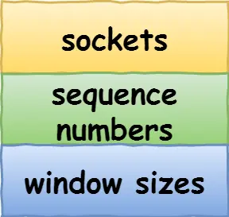
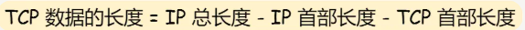
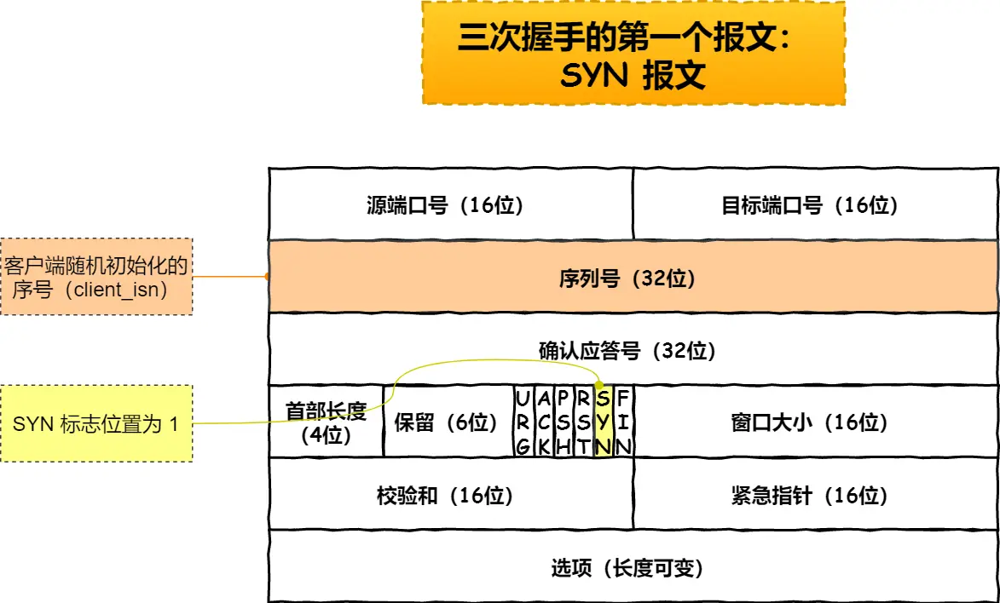
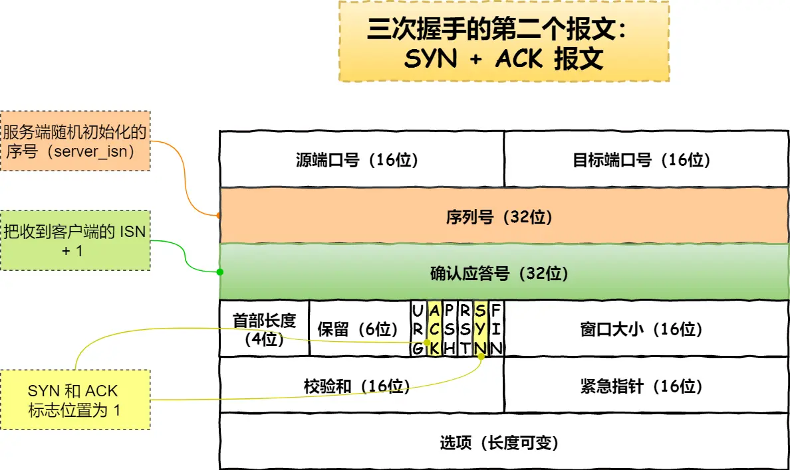
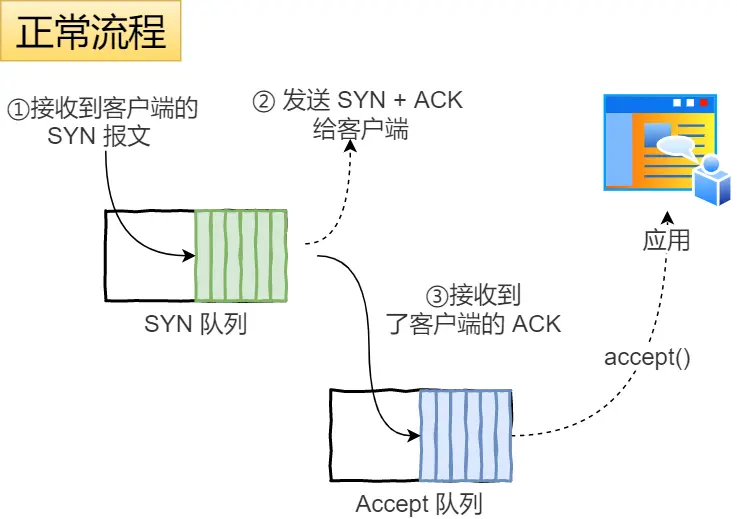

基本认识
TCP报文格式

- 序列号: 在建立连接时,由计算机生成的随机数作为初始值,通过SYN包传给接收端主机,每发送一次数据就对该字节数+1,用来解决网络包乱序问题
- 确认应答号：指下一次「期望」收到的数据的序列号，发送端收到这个确认应答以后可以认为在这个序号以前的数据都已经被正常接收。用来解决丢包的问题。
- 控制位： 标志信息
- ACK：该位为
1时，「 确认应答号」的字段变为有效，TCP 规定除了最初建立连接时的SYN包之外该位必须设置为1。 - RST：该位为
1时，表示 TCP 连接中出现异常必须强制断开连接。 - SYN：该位为
1时，表示希望建立连接，并在其「序列号」的字段进行序列号初始值的设定。 - FIN：该位为
1时，表示今后不会再有数据发送，希望断开连接。当通信结束希望断开连接时，通信双方的主机之间就可以相互交换FIN位为 1 的 TCP 段。
- ACK：该位为
为什么需要 TCP 协议？ TCP 工作在哪一层？
IP 层是「不可靠」的，它不保证网络包的交付、不保证网络包的按序交付、也不保证网络包中的数据的完整性。
如果需要保障网络数据包的可靠性，那么就需要由上层（传输层）的 TCP 协议来负责。
因为 TCP 是一个工作在传输层的可靠数据传输的服务，它能确保接收端接收的网络包是无损坏、无间隔、非冗余和按序的。
什么是TCP
TCP 是面向连接的、可靠的、基于字节流的传输层通信协议。
- 面向连接：一定是「一对一」才能连接，不能像 UDP 协议可以一个主机同时向多个主机发送消息，也就是一对多是无法做到的；
- 可靠的：无论的网络链路中出现了怎样的链路变化，TCP 都可以保证一个报文一定能够到达接收端；
- 字节流：用户消息通过 TCP 协议传输时，消息可能会被操作系统「分组」成多个的 TCP 报文，如果接收方的程序如果不知道「消息的边界」，是无法读出一个有效的用户消息的。并且 TCP 报文是「有序的」，当「前一个」TCP 报文没有收到的时候，即使它先收到了后面的 TCP 报文，那么也不能扔给应用层去处理，同时对「重复」的 TCP 报文会自动丢弃
什么是TCP连接
用于保证可靠性和流量控制维护的某些状态信息，这些信息的组合，包括 Socket、序列号和窗口大小称为连接。

所以我们可以知道，建立一个 TCP 连接是需要客户端与服务端达成上述三个信息的共识。
- Socket：由 IP 地址和端口号组成
- 序列号：用来解决乱序问题等
- 窗口大小：用来做流量控制
如何唯一确定一个TCP连接
TCP 四元组可以唯一的确定一个连接，四元组包括如下：
- 源地址
- 源端口
- 目的地址
- 目的端口
源地址和目的地址的字段（32 位）是在 IP 头部中，作用是通过 IP 协议发送报文给对方主机。
源端口和目的端口的字段（16 位）是在 TCP 头部中，作用是告诉 TCP 协议应该把报文发给哪个进程。
服务端通常固定在某个本地端口上监听，等待客户端的连接请求。
客户端 IP 和端口是可变的，其理论值计算公式如下:最大TCP连接数=客户端ip数*客户端端口数
对IPv4,IP数最多为2的32次方,端口数最多为2的16次方.所以总共是2的48次方
但是服务端最大并发TCP连接数实际上是存在上限的,并不能达到理论最大值.
- 文件描述符限制，每个 TCP 连接都是一个文件，如果文件描述符被占满了，会发生 Too many open files。Linux 对可打开的文件描述符的数量分别作了三个方面的限制：
- 系统级：当前系统可打开的最大数量，通过
cat /proc/sys/fs/file-max查看； - 用户级：指定用户可打开的最大数量，通过
cat /etc/security/limits.conf查看； - 进程级：单个进程可打开的最大数量，通过
cat /proc/sys/fs/nr_open查看；
- 系统级：当前系统可打开的最大数量，通过
- 内存限制，每个 TCP 连接都要占用一定内存，操作系统的内存是有限的，如果内存资源被占满后，会发生 OOM。
UDP和TCP的区别
UDP 不提供复杂的控制机制，利用 IP 提供面向「无连接」的通信服务。
UDP 协议真的非常简，头部只有 8 个字节（64 位），UDP 的头部格式如下
- 目标和源端口：主要是告诉 UDP 协议应该把报文发给哪个进程。
- 包长度：该字段保存了 UDP 首部的长度跟数据的长度之和。
- 校验和：校验和是为了提供可靠的 UDP 首部和数据而设计，防止收到在网络传输中受损的 UDP 包。
TCP 和 UDP 区别：
1. 连接
- TCP 是面向连接的传输层协议，传输数据前先要建立连接。
- UDP 是不需要连接，即刻传输数据。
2. 服务对象 - TCP 是一对一的两点服务，即一条连接只有两个端点。
- UDP 支持一对一、一对多、多对多的交互通信
3. 可靠性 - TCP 是可靠交付数据的，数据可以无差错、不丢失、不重复、按序到达。
- UDP 是尽最大努力交付，不保证可靠交付数据。但是我们可以基于 UDP 传输协议实现一个可靠的传输协议，比如 QUIC 协议
4. 拥塞控制、流量控制 - TCP 有拥塞控制和流量控制机制，保证数据传输的安全性。
- UDP 则没有，即使网络非常拥堵了，也不会影响 UDP 的发送速率。
5. 首部开销 - TCP 首部长度较长，会有一定的开销，首部在没有使用「选项」字段时是
20个字节，如果使用了「选项」字段则会变长的。 - UDP 首部只有 8 个字节，并且是固定不变的，开销较小。
6. 传输方式 - TCP 是流式传输，没有边界，但保证顺序和可靠。[在逻辑上,可能发生粘包或拆包,发送次数与接收次数无关,程序员必须自己规定消息结束符来区分消息]
- UDP 是一个包一个包的发送，是有边界的，但可能会丢包和乱序。
7. 分片不同
- TCP 的数据大小如果大于 MSS 大小，则会在传输层进行分片，目标主机收到后，也同样在传输层组装 TCP 数据包，如果中途丢失了一个分片，只需要传输丢失的这个分片。
- UDP 的数据大小如果大于 MTU 大小，则会在 IP 层进行分片，目标主机收到后，在 IP 层组装完数据，接着再传给传输层。
TCP 和 UDP 应用场景：
由于 TCP 是面向连接，能保证数据的可靠性交付，因此经常用于：
FTP文件传输；- HTTP / HTTPS；
由于 UDP 面向无连接，它可以随时发送数据，再加上 UDP 本身的处理既简单又高效，因此经常用于：
- 包总量较少的通信，如
DNS、SNMP等； - 视频、音频等多媒体通信；
- 广播通信；
为什么 UDP 头部没有「首部长度」字段，而 TCP 头部有「首部长度」字段呢？
原因是 TCP 有可变长的「选项」字段，而 UDP 头部长度则是不会变化的，无需多一个字段去记录 UDP 的首部长度。
为什么 UDP 头部有「包长度」字段，而 TCP 头部则没有「包长度」字段呢？
先说说 TCP 是如何计算负载数据长度：

其中 IP 总长度 和 IP 首部长度，在 IP 首部格式是已知的。TCP 首部长度，则是在 TCP 首部格式已知的，所以就可以求得 TCP 数据的长度。
大家这时就奇怪了问：“UDP 也是基于 IP 层的呀，那 UDP 的数据长度也可以通过这个公式计算呀？ 为何还要有「包长度」呢？”
这么一问，确实感觉 UDP 的「包长度」是冗余的。
我查阅了很多资料，我觉得有两个比较靠谱的说法：
- 第一种说法：因为为了网络设备硬件设计和处理方便，首部长度需要是
4字节的整数倍。如果去掉 UDP 的「包长度」字段，那 UDP 首部长度就不是4字节的整数倍了，所以我觉得这可能是为了补全 UDP 首部长度是4字节的整数倍，才补充了「包长度」字段。 - 第二种说法：如今的 UDP 协议是基于 IP 协议发展的，而当年可能并非如此，依赖的可能是别的不提供自身报文长度或首部长度的网络层协议，因此 UDP 报文首部需要有长度字段以供计算。
TCP 和 UDP 可以使用同一个端口吗？
答案：可以的。
在数据链路层中，通过 MAC 地址来寻找局域网中的主机。在网际层中，通过 IP 地址来寻找网络中互连的主机或路由器。在传输层中，需要通过端口进行寻址，来识别同一计算机中同时通信的不同应用程序。
所以，传输层的「端口号」的作用，是为了区分同一个主机上不同应用程序的数据包。
传输层有两个传输协议分别是 TCP 和 UDP，在内核中是两个完全独立的软件模块。
当主机收到数据包后，可以在 IP 包头的「协议号」字段知道该数据包是 TCP/UDP，所以可以根据这个信息确定送给哪个模块（TCP/UDP）处理，送给 TCP/UDP 模块的报文根据「端口号」确定送给哪个应用程序处理。

因此，TCP/UDP 各自的端口号也相互独立，如 TCP 有一个 80 号端口，UDP 也可以有一个 80 号端口，二者并不冲突。
关于端口的知识点，还是挺多可以讲的，比如还可以牵扯到这几个问题：
- 多个 TCP 服务进程可以同时绑定同一个端口吗？
- 重启 TCP 服务进程时，为什么会出现“Address in use”的报错信息？又该怎么避免？
- 客户端的端口可以重复使用吗？
- 客户端 TCP 连接 TIME_WAIT 状态过多，会导致端口资源耗尽而无法建立新的连接吗？
上面这些问题，可以看这篇文章：TCP 和 UDP 可以使用同一个端口吗？
TCP连接建立
三次握手
TCP 是面向连接的协议，所以使用 TCP 前必须先建立连接，而建立连接是通过三次握手来进行的。三次握手的过程如下图：

- 一开始,客户端和服务端都处于close状态,先是服务端主动监听某个端口,处于listen状态
- 客户端会随机初始化序列号client_isn,然后SYN置1,组成一个SYN报文,发送给服务端,表示发起连接.该报文不包含应用层数据
- 发送报文后,客户端处于SYN-SENT状态
- 服务端收到客户端的SYN报文之后,服务端也随机初始化自己的序列号(server-isn),确认应答号位置填入client_isn+1,然后ACK和SYN都置1:表示确认应答位有效&&希望建立连接.然后把报文发送给客户端,该报文也不包含应用层数据,之后服务端处于SYN-RCVD状态
- 客户端上收到服务端报文之后，还需要向服务端回应最后一个应答报文,首先该应答报文TCP首部ACK标志位置为1,其次,确认应答号字段填入server_isn+1.然后发送.这次报文可以携带客户端到服务端的数据了,之后客户端处于established状态

- 服务端收到之后,也进入established状态.此时连接建立完成,客户端和服务端可以相互发送数据了
第三次握手是可以携带数据的，前两次握手是不可以携带数据的
只有第一个报文不需要ack置1,其他都需要置1.syn是前两个报文需要置1.
为什么是三次握手
重要的是为什么三次握手才可以初始化 Socket、序列号和窗口大小并建立 TCP 连接。
- 避免历史连接
如果收到了过期的旧请求,再返回一个包确认是否是正确的(用client_isn+1),客户端发现是错误的之后,就会发一个取消指令,连接就不会成立- 防止资源浪费
如果SYN在网络中阻塞了,客户端没收到ACK报文就会一直重复发送SYN,然后服务器收到了多个请求,会问是否确认要连接,只有确认之后才会分配资源.不然的话就会根据多个SYN建立多个连接,浪费资源.- 同步序列号
必须都知道对方的起始序列号,交流才不会乱
起始序列号-确认.起始序列号-确认 这样三次.
查看TCP状态
TCP 的连接状态查看，在 Linux 可以通过 netstat -napt 命令查看。

为什么每次建立 TCP 连接时，初始化的序列号都要求不一样呢？
主要原因有两个方面：
-
为了防止历史报文被下一个相同四元组的连接接收（主要方面）
-
为了安全性，防止黑客伪造的相同序列号的 TCP 报文被对方接收；
-
客户端和服务端建立一个 TCP 连接，在客户端发送数据包被网络阻塞了，然后超时重传了这个数据包，而此时服务端设备断电重启了，之前与客户端建立的连接就消失了，于是在收到客户端的数据包的时候就会发送 RST 报文。
-
紧接着，客户端又与服务端建立了与上一个连接相同四元组的连接；
-
在新连接建立完成后，上一个连接中被网络阻塞的数据包正好抵达了服务端，刚好该数据包的序列号正好是在服务端的接收窗口内，所以该数据包会被服务端正常接收，就会造成数据错乱。
这里的核心在于 一个数据包被阻塞了 以至于发出的时候,他还在上一个连接里,被收到的时候,已经是下一个新的连接了.
初始序列号 ISN 是如何随机产生的？
起始 ISN 是基于时钟的，每 4 微秒 + 1，转一圈要 4.55 个小时。
RFC793 提到初始化序列号 ISN 随机生成算法：ISN = M + F(localhost, localport, remotehost, remoteport)。
M是一个计时器，这个计时器每隔 4 微秒加 1。F是一个 Hash 算法，根据源 IP、目的 IP、源端口、目的端口生成一个随机数值。要保证 Hash 算法不能被外部轻易推算得出，用 MD5 算法是一个比较好的选择。
可以看到，随机数是会基于时钟计时器递增的，基本不可能会随机成一样的初始化序列号。
就是根据时间和四元组生成的.
既然 IP 层会分片，为什么 TCP 层还需要 MSS 呢？
我们先来认识下 MTU 和 MSS

MTU：一个网络包的最大长度，以太网中一般为1500字节；MSS：除去 IP 和 TCP 头部之后，一个网络包所能容纳的 TCP 数据的最大长度；
如果在 TCP 的整个报文（头部 + 数据）交给 IP 层进行分片，会有什么异常呢？
当 IP 层有一个超过 MTU 大小的数据（TCP 头部 + TCP 数据）要发送[这里是说,算上自己的ip头之后]，那么 IP 层就要进行分片，把数据分片成若干片，保证每一个分片都小于 MTU。把一份 IP 数据报进行分片以后，由目标主机的 IP 层来进行重新组装后，再交给上一层 TCP 传输层。
这看起来井然有序，但这存在隐患的，那么当如果一个 IP 分片丢失，整个 IP 报文的所有分片都得重传。
因为 IP 层本身没有超时重传机制，它由传输层的 TCP 来负责超时和重传。
当某一个 IP 分片丢失后，接收方的 IP 层就无法组装成一个完整的 TCP 报文（头部 + 数据），也就无法将数据报文送到 TCP 层，所以接收方不会响应 ACK 给发送方，因为发送方迟迟收不到 ACK 确认报文，所以会触发超时重传，就会重发「整个 TCP 报文（头部 + 数据）」。
因此，可以得知由 IP 层进行分片传输，是非常没有效率的。
所以，为了达到最佳的传输效能 TCP 协议在建立连接的时候通常要协商双方的 MSS 值，当 TCP 层发现数据超过 MSS 时，则就先会进行分片，当然由它形成的 IP 包的长度也就不会大于 MTU ，自然也就不用 IP 分片了。
发送方会按照按照接收方告知过来的mss来发送.经过 TCP 层分片后，如果一个 TCP 分片丢失后，进行重发时也是以 MSS 为单位，而不用重传所有的分片，大大增加了重传的效率。
握手丢失了，会发生什么？
谁的数据包没被确认,谁就负责重传.
1.第一次握手丢失了,那么出发超时重传.达到最大重传次数之后,放弃连接.
2.第二次握手丢失了,因为同时也是对第一次握手的确认,所以两边的都会重传.同样是达到最大重传次数之后放弃
3.第三次握手丢失,但是ACK报文本身不会重传.因为服务端还在等ACK,超时未收到,会以为是第二次握手发的报文对方没有收到,所以会重传SYN-ACK,然后客户端收到之后,知道自己上一次发的ACK丢了,于是再次发送ACK,也是看服务端的最大重传次数
什么是 SYN 攻击？如何避免 SYN 攻击？
我们都知道 TCP 连接建立是需要三次握手，假设攻击者短时间伪造不同 IP 地址的 SYN 报文，服务端每接收到一个 SYN 报文，就进入SYN_RCVD 状态，但服务端发送出去的 ACK + SYN 报文，无法得到未知 IP 主机的 ACK 应答，久而久之就会占满服务端的半连接队列，使得服务端不能为正常用户服务。
在 TCP 三次握手的时候，Linux 内核会维护两个队列，分别是：
- 半连接队列，也称 SYN 队列；
- 全连接队列，也称 accept 队列；
我们先来看下 Linux 内核的SYN队列（半连接队列）与Accpet队列（全连接队列）是如何工作的？
正常流程： - 当服务端接收到客户端的 SYN 报文时，会创建一个半连接的对象，然后将其加入到内核的「 SYN 队列」；
- 接着发送 SYN + ACK 给客户端，等待客户端回应 ACK 报文；
- 服务端接收到 ACK 报文后，从「 SYN 队列」取出一个半连接对象，然后创建一个新的连接对象放入到「 Accept 队列」；
- 应用通过调用
accpet()socket 接口，从「 Accept 队列」取出连接对象。
不管是半连接队列还是全连接队列，都有最大长度限制，超过限制时，默认情况都会丢弃报文。
SYN 攻击方式最直接的表现就会把 TCP 半连接队列打满，这样当 TCP 半连接队列满了，后续再在收到 SYN 报文就会丢弃，导致客户端无法和服务端建立连接。
避免 SYN 攻击方式，可以有以下四种方法：
- 调大 netdev_max_backlog；
- 增大 TCP 半连接队列；
- 开启 tcp_syncookies；
- 减少 SYN+ACK 重传次数
方式一：调大 netdev_max_backlog
当网卡接收数据包的速度大于内核处理的速度时，会有一个队列保存这些数据包。控制该队列的最大值如下参数，默认值是 1000，我们要适当调大该参数的值，比如设置为 10000：
net.core.netdev_max_backlog = 10000
方式二：增大 TCP 半连接队列
增大 TCP 半连接队列，要同时增大下面这三个参数：
- 增大 net.ipv4.tcp_max_syn_backlog
- 增大 listen() 函数中的 backlog
- 增大 net.core.somaxconn
方式三：开启 net.ipv4.tcp_syncookies
开启 syncookies 功能就可以在不使用 SYN 半连接队列的情况下成功建立连接，相当于绕过了 SYN 半连接来建立连接。

具体过程：
- 当 「 SYN 队列」满之后，后续服务端收到 SYN 包，不会丢弃，而是根据算法，计算出一个
cookie值； - 将 cookie 值放到第二次握手报文的「序列号」里，然后服务端回第二次握手给客户端；
- 服务端接收到客户端的应答报文时，服务端会检查这个 ACK 包的合法性。如果合法，将该连接对象放入到「 Accept 队列」。
- 最后应用程序通过调用
accpet()接口，从「 Accept 队列」取出的连接。
可以看到，当开启了 tcp_syncookies 了，即使受到 SYN 攻击而导致 SYN 队列满时，也能保证正常的连接成功建立。
net.ipv4.tcp_syncookies 参数主要有以下三个值：
- 0 值，表示关闭该功能；
- 1 值，表示仅当 SYN 半连接队列放不下时，再启用它；
- 2 值，表示无条件开启功能；
那么在应对 SYN 攻击时，只需要设置为 1 即可。
$ echo 1 > /proc/sys/net/ipv4/tcp_syncookies
方式四：减少 SYN+ACK 重传次数
当服务端受到 SYN 攻击时，就会有大量处于 SYN_REVC 状态的 TCP 连接，处于这个状态的 TCP 会重传 SYN+ACK ，当重传超过次数达到上限后，就会断开连接。
那么针对 SYN 攻击的场景，我们可以减少 SYN-ACK 的重传次数，以加快处于 SYN_REVC 状态的 TCP 连接断开。
SYN-ACK 报文的最大重传次数由 tcp_synack_retries内核参数决定（默认值是 5 次），比如将 tcp_synack_retries 减少到 2 次：
连接断开四次挥手
双方都可以主动断开连接，断开连接后主机中的「资源」将被释放，四次挥手的过程如下图：

- 客户端打算关闭连接，此时会发送一个 TCP 首部
FIN标志位被置为1的报文，也即FIN报文，之后客户端进入FIN_WAIT_1状态。 - 服务端收到该报文后，就向客户端发送
ACK应答报文，接着服务端进入CLOSE_WAIT状态。 - 客户端收到服务端的
ACK应答报文后，之后进入FIN_WAIT_2状态。 - 等待服务端处理完数据后，也向客户端发送
FIN报文，之后服务端进入LAST_ACK状态。 - 客户端收到服务端的
FIN报文后，回一个ACK应答报文，之后进入TIME_WAIT状态 - 服务端收到了
ACK应答报文后，就进入了CLOSE状态，至此服务端已经完成连接的关闭。 - 客户端在经过
2MSL一段时间后，自动进入CLOSE状态，至此客户端也完成连接的关闭。
你可以看到，每个方向都需要一个 FIN 和一个 ACK，因此通常被称为四次挥手。
这里一点需要注意是：主动关闭连接的，才有 TIME_WAIT 状态。
关于FIN_WAIT_2状态
- 这是第二次挥手后，客户端等待服务端发 FIN 的状态。
- 如果用
close()关闭： 受tcp_fin_timeout(默认 60s) 控制。超时没收到第三次挥手，内核直接关连接。 - 如果用
shutdown()关闭： 不受tcp_fin_timeout控制。如果服务端一直不发第三次挥手，客户端会一直死等在FIN_WAIT_2，可能导致内存泄漏。
为什么挥手需要四次
再来回顾下四次挥手双方发 FIN 包的过程，就能理解为什么需要四次了。
- 关闭连接时，客户端向服务端发送
FIN时，仅仅表示客户端不再发送数据了但是还能接收数据。 - 服务端收到客户端的
FIN报文时，先回一个ACK应答报文，而服务端可能还有数据需要处理和发送，等服务端不再发送数据时，才发送FIN报文给客户端来表示同意现在关闭连接。
从上面过程可知，服务端通常需要等待完成数据的发送和处理，所以服务端的 ACK 和 FIN 一般都会分开发送，因此是需要四次挥手。
挥手丢失了会发生什么
- ACK报文永远不会被重传
- 谁发的FIN,谁负责重传.
- 如果Fin报文丢失了,发送方会触发超时重传
- 如果ACK报文丢了,FIN的发送方会以为自己发的Fin对方没有收到,所以还是自己重传
- 重传次数控制在一定次数内,超过了会放弃
1.第一次fin丢失,客户端重传
2.第二次服务端发ack丢失,客户端重传fin
3.第三次服务端fin丢失,服务端重传
4.第四次客户端发ack丢失,服务端重传fin.客户端收到重传的fin之后,重置2MSL定时器并再次发送ACK
为什么是 2MSL
只有主动关闭连接的那一方(通常是客户端)才会进入TIME_WAIT
- MSL是报文在网络中最长的生存时间
- 两倍:允许报文一去一回.既要保证最后的ACK能够传给对方,也要允许对方重传的Fin能传回来.
- Linux 硬编码
MSL = 30秒。,因此两倍就是60s,不可以动态修改.如果在等待期间收到了服务器重传的fin,定时器会重置,重新计时
为什么需要TIME_WAIT状态
- 防止历史连接中的数据，被后面相同四元组的连接错误的接收,是随机序列号的更进一步保障.
- 保证「被动关闭连接」的一方，能被正确的关闭；假设客户端没有 TIME_WAIT 状态，而是在发完最后一次回 ACK 报文就直接进入 CLOSE 状态，如果该 ACK 报文丢失了，服务端则重传的 FIN 报文，而这时客户端已经进入到关闭状态了，在收到服务端重传的 FIN 报文后，就会回 RST 报文,比较不优雅
TIME_WAIT 过多有什么危害？
过多的 TIME-WAIT 状态主要的危害有两种：
- 第一是占用系统资源，比如文件描述符、内存资源、CPU 资源、线程资源等；
- 第二是占用端口资源，端口资源也是有限的，一般可以开启的端口为
32768～61000，也可以通过net.ipv4.ip_local_port_range参数指定范围。
客户端和服务端 TIME_WAIT 过多，造成的影响是不同的。
如果客户端（主动发起关闭连接方）的 TIME_WAIT 状态过多，占满了所有端口资源，那么就无法对「目的 IP+ 目的 PORT」都一样的服务端发起连接了，但是被使用的端口，还是可以继续对另外一个服务端发起连接的。
因此，客户端（发起连接方）都是和「目的 IP+ 目的 PORT 」都一样的服务端建立连接的话，当客户端的 TIME_WAIT 状态连接过多的话，就会受端口资源限制，如果占满了所有端口资源，那么就无法再跟「目的 IP+ 目的 PORT」都一样的服务端建立连接了。
不过，即使是在这种场景下，只要连接的是不同的服务端，端口是可以重复使用的，所以客户端还是可以向其他服务端发起连接的，这是因为内核在定位一个连接的时候，是通过四元组（源IP、源端口、目的IP、目的端口）信息来定位的，并不会因为客户端的端口一样，而导致连接冲突。
如果服务端（主动发起关闭连接方）的 TIME_WAIT 状态过多，并不会导致端口资源受限，因为服务端只监听一个端口，而且由于一个四元组唯一确定一个 TCP 连接，因此理论上服务端可以建立很多连接，但是 TCP 连接过多，会占用系统资源，比如文件描述符、内存资源、CPU 资源、线程资源等。